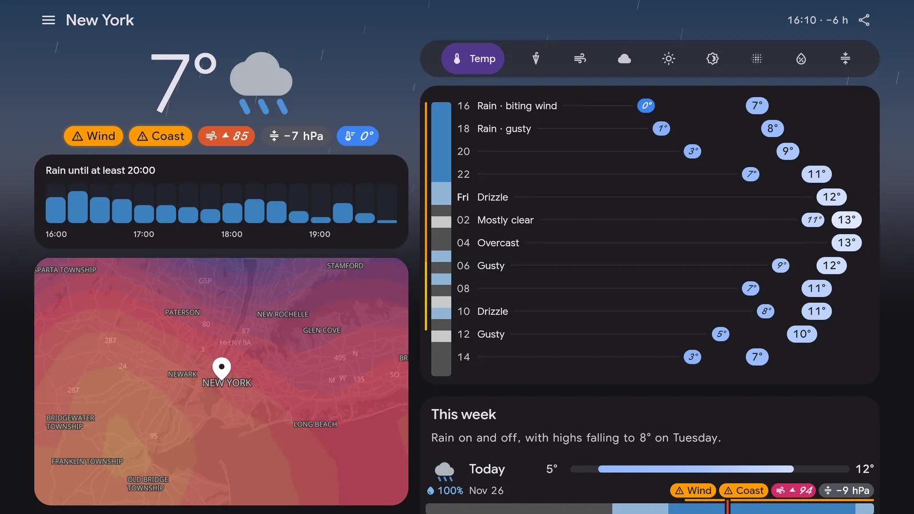
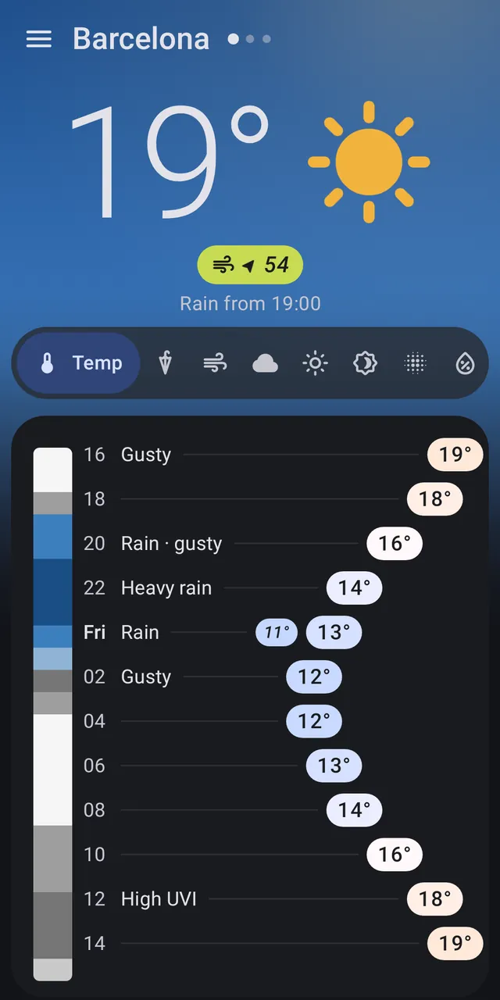
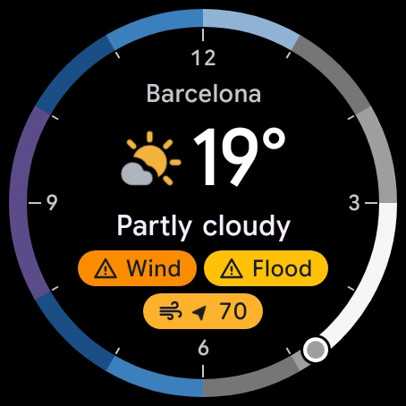
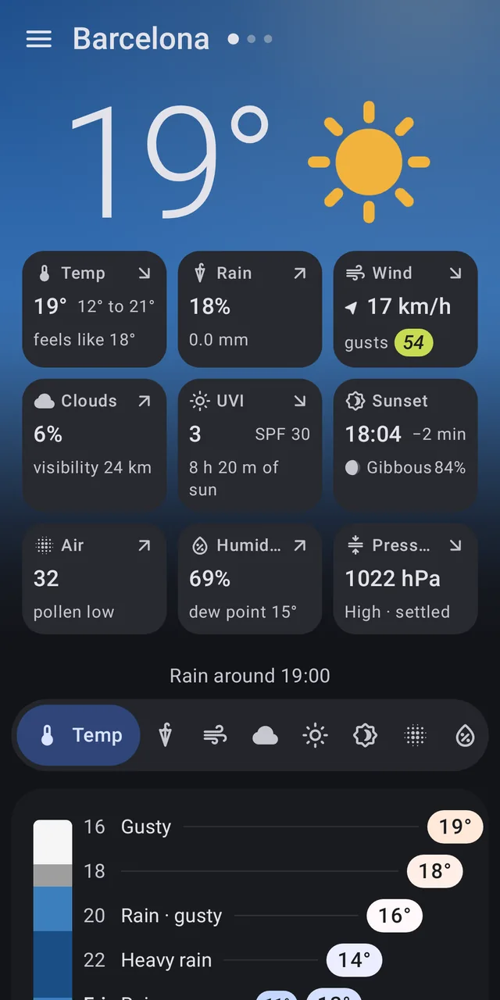
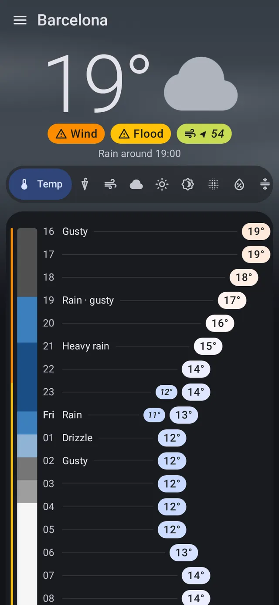
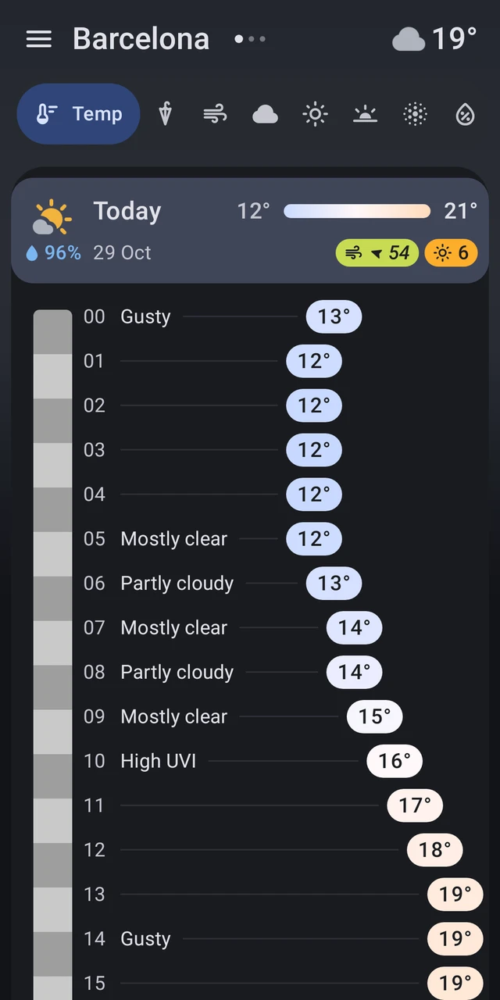
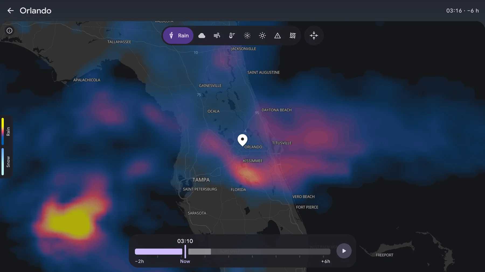
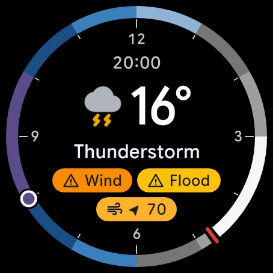

Rain, and where it's going
A strip under the sky shows the rain in the next hours. The map plays it forward. It also shows clouds, wind, temperature, air quality, UV, warnings, and tropical storms.
The sky, hour by hour
A free weather app for Android phones, tablets, and watches. It shows the sky now, and the hours ahead on one graph.
Skyline is in testing on Google Play. To try it, send me the Gmail address your Android phone uses. You'll then get it from Play, with its updates. You can also open the forecast and the map in a browser.




Swipe to change what the graph shows: temperature, rain, wind, clouds, UV, air quality, the sun and the moon.

Warnings come from the weather service of the country you're in. They show on the forecast, and you get a notification.

Tap a day to see its hours. You can also look up any date back to 1940.
A strip under the sky shows the rain in the next hours. The map plays it forward. It also shows clouds, wind, temperature, air quality, UV, warnings, and tropical storms.


The watch draws the next 12 hours around its dial. Turn the crown to step through them. On the phone, a widget shows the sky ahead and the rain around you.
I've used Android weather apps for more than 15 years. Most were hard to read, or kept the good parts behind a subscription. So I made the one I always wanted. Its forecasts come from free, open data such as Open-Meteo, so Skyline is free too.
Skyline has no server of its own. Your places and settings stay on your phone. The privacy policy lists the services it asks for the weather.